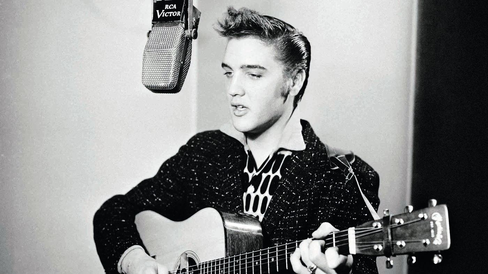

Elvis Presley is, quite simply, the king of rock & roll.
In 1954, the performer kicked off a musical revolution by modernizing traditional genres such as blues, country and bluegrass for contemporary (and more youthful) audiences. Throw in a charismatic stage presence with then-scandalous hip-swings and body contortions, and it's easy to see why Presley set the charts (and hearts) ablaze.
It's difficult to overstate Elvis Presley's influence on music and culture. His hip-swinging presence, golden voice and raucous rockabilly caused a rock & roll domino effect. Buddy Holly moved away from country after seeing Presley in concert, for example, and his appearances on The Ed Sullivan Show induced audience pandemonium and established him as a musical rebel.
A consummate performer, he relished contorting his body in response to crowd screams—knowing full well every wrist flick, leg shake and body swerve would delight listeners and convey sexual intrigue. As a singer, Presley was also expressive and dramatic; his voice could be wounded, tender, romantic and desolate. His delivery exuded sweetness one moment, and danger the next.
More than that, however, he and his bandmates took traditional influences—blues, country and bluegrass—and modernized them for contemporary (and more youthful) audiences. Quicker tempos, hot-rodding arrangements, edgier textures—all of these things became hallmarks of his music.
Born in Tupelo, Mississippi, Presley was exposed to gospel music in a Pentecostal church and, after his family moved to Memphis, Beale Street's blues and jazz. His big break came right after high school, when he visited Memphis Recording Service studio to record a few songs. That 1953 visit (and, specifically, Presley's versatile voice) made quite an impression on everyone there—from secretary Marion Keisker to studio owner Sam Phillips, who had also recently founded Sun Records.
In June 1954, when the latter was looking for a vocalist to cut a song, he called up Presley and invited him back to the studio. Sensing some backing musicians would help, Phillips paired the vocalist with guitarist Scotty Moore and bassist Bill Black. In early July—during a session that at first seemed like it was going nowhere—this trio eventually found their groove with an upbeat version of the blues song "That's All Right (Mama)" and a brisker take on the Bill Monroe bluegrass tune "Blue Moon of Kentucky."
The music was an immediate radio sensation, and the songs comprised Presley's first release for Sun Records. Several more singles followed in the subsequent year, as did live shows. In fact, Moore, Black and drummer D.J. Fontana formed the nucleus of Presley's band, the Blue Moon Boys, which would stay with him as he recorded for Sun Records and then had his contract bought by RCA in late 1955.
"I Forgot To Remember to Forget"—which was released on Sun Records and later reissued by Presley's new label—reached Number One on the country charts in early 1956, but its success was eclipsed by his first proper RCA single, "Heartbreak Hotel." A Number One pop crossover hit, the song highlighted Presley's low-register warble and featured sparse, strolling instrumentation that amplified the song's despair.
The song made Presley enormously relatable—who can resist trying to comfort someone nursing a broken heart?—and the budding superstar came into his own on a variety of 1956 Number One singles: "Don't Be Cruel," "Love Me Tender" and "Hound Dog." The next year brought even more success, as "(Let Me Be Your) Teddy Bear," "All Shook Up" and "Jailhouse Rock" all reached Number One. As Presley grew more popular, his music and moves accordingly grew bolder, which only exacerbated the frenzy around him.
Presley took a two-year break starting in 1958 for a stint in the Army, and when he returned in 1960 he resumed his acting career—something he had dabbled in starting with 1956's Love Me Tender movie. Music was an afterthought, as he focused on soundtrack work that didn't connect with audiences as well. Still, Presley did win his first Grammy Award for his 1967 gospel album, How Great Thou Art.
By the end of the Sixties, however, Presley was primed for a comeback. On December 3, 1968, Elvis—a.k.a. his '68 Comeback Special—aired on NBC. The leather-clad singer embraced his rock & roll roots and made a grand re-entrance, kicking off a concert and recording resurgence that established him as a crooning, charming showman. The orchestrated "Suspicious Minds" hit Number One in 1969.
In the Seventies, Presley toured constantly. This pace—as well as growing issues with prescription drugs—took a toll on his health. On August 16, 1977, while at home in his mansion, Graceland, he died of a heart attack.
Presley's mythology and legacy live on via Graceland, which is now a popular museum, and via high-profile use of his music: In 2002, for example, a Junkie XL remix of the song "A Little Less Conversation" became a global hit. His achievements speak for themselves, however: Over 100 of his songs reached the Top 40—an incredible statistic that points to his incredible, indelible influence.
Inductee: Elvis Presley (born January 8, 1935, died August 16, 1977)